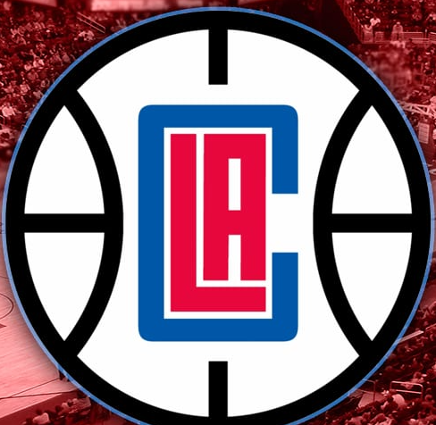
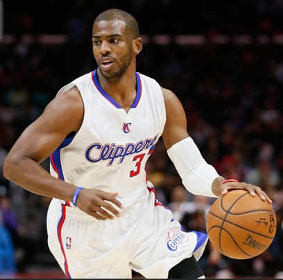
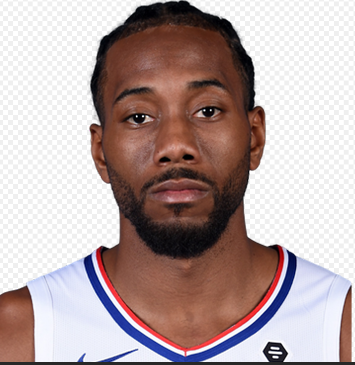

Clippers
The Los Angeles Clippers (branded as the LA Clippers) are an American professional basketball team based in Los Angeles. The Clippers compete in the National Basketball Association (NBA) as a member of the Pacific Division in the league's Western Conference. They play their home games at the Staples Center, an arena they share with fellow NBA team Los Angeles Lakers, as well as the Los Angeles Sparks of the Women's National Basketball Association (WNBA) and the Los Angeles Kings of the National Hockey League (NHL). The franchise was founded as the Buffalo Braves in 1970 as an expansion team. Led by future Hall of Famer Bob McAdoo, the Braves reached the playoffs three times during their eight seasons in Buffalo. Conflicts with the Canisius Golden Griffins over the Buffalo Memorial Auditorium and the sale of the franchise led to their relocation from Buffalo to San Diego, California in 1978. Rebranded as the San Diego Clippers after the sailing ships seen in the San Diego Bay, the team saw little success and missed the playoffs during all six of their years in San Diego. In 1984, the franchise was controversially relocated to Los Angeles by new owner Donald Sterling without NBA approval. Despite the NBA taking legal action against Sterling and threatening to dissolve the franchise if he did not return the franchise to San Diego, the team was ultimately permitted to remain in Los Angeles, thanks to a counter-lawsuit initiated by Sterling. Over the course of its first 27 seasons in LA, the Clippers qualified for the postseason only four times and won only a single playoff round. They were frequently considered a perennial loser in American professional sports, drawing unfavorable comparisons to the historically successful Lakers. The Clippers' reputation improved during the 2010s, which saw them transform into consistent postseason contenders. Aided by the "Lob City" lineup of Blake Griffin, DeAndre Jordan, and Chris Paul, the team qualified to play in the NBA playoffs in five consecutive seasons from 2011 to 2017 and won two consecutive division titles in 2013 and 2014, both firsts for the franchise. Despite this success, the Clippers have struggled in the postseason and never advanced past the conference semifinals round. They are the oldest franchise to have never played in the NBA Finals.
Christopher Emmanuel Paul (born May 6, 1985) is an American professional basketball player for the Phoenix Suns of the National Basketball Association (NBA). He has won the NBA Rookie of the Year Award, an NBA All-Star Game Most Valuable Player Award, two Olympic gold medals, and led the NBA in assists four times and steals a record six times. He has also been selected to ten NBA All-Star teams, nine All-NBA teams, and nine NBA All-Defensive teams. Paul was a McDonald's All-American in high school. He attended Wake Forest University for two years of college basketball, where he helped the Demon Deacons achieve their first-ever number one ranking. He was selected fourth overall in the 2005 NBA draft by the New Orleans Hornets, where he developed into one of the league's premier players, finishing second in NBA Most Valuable Player Award voting in 2008. During the 2011 offseason, Paul was traded to the Los Angeles Lakers, only for the transaction to be controversially voided by the NBA. Later that summer, he was dealt to the Los Angeles Clippers instead. Behind Paul's playmaking, the Clippers developed a reputation for their fast-paced offense and spectacular alley-oop dunks, earning them the nickname "Lob City". In 2017, he was traded to the Houston Rockets, and helped the team win a franchise-record 65 games in his debut season. He played one more season there before being traded to the Oklahoma City Thunder for Russell Westbrook on July 16, 2019. He played one season in Oklahoma City, which saw him return to his All-Star form, earning him his 10th All-Star nod. With the Thunder looking to rebuild, he was traded to the Phoenix Suns on November 16, 2020. Off the court, Paul has served as the National Basketball Players Association president since August 2013. One of the highest-paid athletes in the world, he holds endorsement deals with companies such as Air Jordan and State Farm. In late 2010, Arenas was traded to the Orlando Magic. After the 2011 NBA lockout, Arenas was the first NBA player to be waived under the "amnesty clause." He signed with the Memphis Grizzlies for the 2011–12 NBA season. Following the end of the season, he signed with the Shanghai Sharks of the Chinese Basketball Association and played one season before retiring. Off the court, Carter established the Embassy of Hope Foundation, assisting children and their families in Florida, New Jersey, and Ontario. He was recognized in 2000 as Child Advocate of the Year by the Children's Home Society, and he received the Florida Governor's Points of Light award in 2007 for his philanthropy in his home state.
Kawhi Anthony Leonard (/kəˈwaɪ/, born June 29, 1991) is an American professional basketball player for the Los Angeles Clippers of the National Basketball Association (NBA). He played two seasons of college basketball for the San Diego State Aztecs and was named a consensus second-team All-American as a sophomore. Leonard opted to forgo his final two seasons at San Diego State to enter the 2011 NBA draft. He was selected by the Indiana Pacers with the 15th overall pick before being traded to the San Antonio Spurs on draft night. With the Spurs, Leonard won an NBA championship in 2014, where he was named the Finals Most Valuable Player. After seven seasons with the Spurs, Leonard was traded to the Toronto Raptors in 2018. In 2019, he led the Raptors to their first NBA championship in franchise history and won his second Finals MVP award. He subsequently moved to his hometown of Los Angeles and signed with the Clippers as a free agent in July 2019. Leonard is a four-time All-Star with two All-NBA First Team selections. Nicknamed the "Claw," or "Klaw," for his ball-hawking skills, he has earned six All-Defensive Team selections and won Defensive Player of the Year honors in 2015 and 2016.